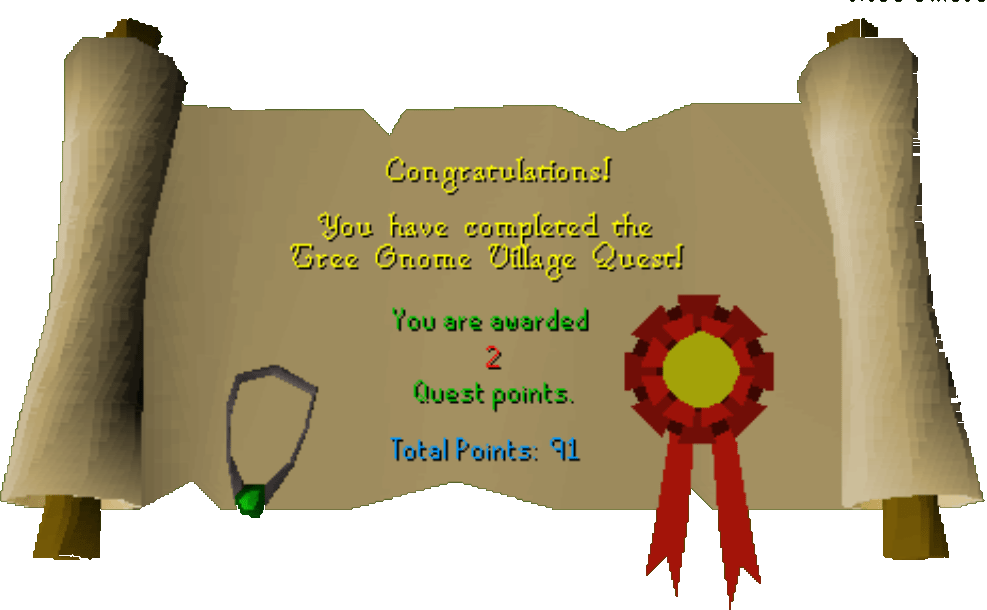

Tree Gnome Village
Description: The tree gnomes are in trouble. General Khazard's forces are hunting them to extinction. Find you way through the hedge maze to the gnomes secret treetop village. Then help the gnomes fight Khazard and retrieve the orbs of protection.
Difficulty: Intermediate
Length: Long
Items & Skills Needed:
- The ability to defeat a level 112 Khazard Warlord
Reward: 2 Quest points, 11,500 Attack XP, a gnome amulet, the ability to use the spirit trees to travel
Instructions:
Find Elkoy near the northwest corner of the maze. He invites you to try the maze. Once you conquer it, talk to King Bolren. He'll ask you to help their cause by retrieving 1 of 3 orbs of protection. Agree and you'll be led to battlefield.
Talk to Commander Montai to get the latest update with the battle. He'll ask for 6 loads of wood to repair defences. Assuming you have your 6 logs with you, talk to him again. He will thank you. Speak to him once more, and he'll ask you to find the coordinates from his trackers to fire the ballista at the Khazard stronghold.
Head north to find the first tracker. He's in an oblong building in the northeast part of the Khazard camp. You'll learn that the Y-coordinate is 5.
Head west, above the long building. The second gnome should be just along the wall. You'll find that the height coordinate is 4.
Head south on the outskirts of the camp to find the 3rd tracker. He's a little "off" and gives you a strange riddle to decipher the X-coordinate. Luckily, I'm a master riddler and figured it out.
"More than me" — Higher than 1, "Less than our feet" — Less than 4, "More than we" — More than 2, and "Khazard's men are beat" — This obviously refers to me as beating the men, NOT, well anyway he means 3 because thats the only number left. Return to the Gnome camp.
Go directly to the ballista and use the coordinates you have learned.
Height=4 X=3 Y=5
Height=4 X=3 Y=5
Assuming you entered these in right, go the main building and climb over the wall. It's the northwest building. Be prepared to get rid of a level 48 Khazard commander, one downstairs and one up.
Upon their defeat, open the chest on the 2nd floor to get the orb. Return to Elkoy at the maze entrance and he'll lead you back in.
Speak to Bolren again. He is briefly thankful for your return, but you'll find that his family has been killed, and the other two orbs were taken by Khazard's troops. Elkoy will guide you out, go north past the Khazard camp, then northwest and past level 64 wolves to face the Warlord who holds the orbs.
Run past his guards and attack him. You should have food, which you should run and eat if your health gets low. Ranging and maging work well on him, since he cannot leave a certain zone. Weaken him until you run out or he's fairly weak, then charge him and kill him.
Once he is dead (congratulations!), you'll receive the orbs. Return once again to Elkoy, then to Bolren. He'll tell you about the Spirit Trees and give you your reward.
Congratulations, Quest Complete!

This quest guide was written by Gnat88.
This quest guide was entered into the database on Tue, Mar 02, 2004, at 10:20:57 PM by Weezy and CJH and was last updated on Sat, Oct 09, 2004, at 12:09:17 AM.